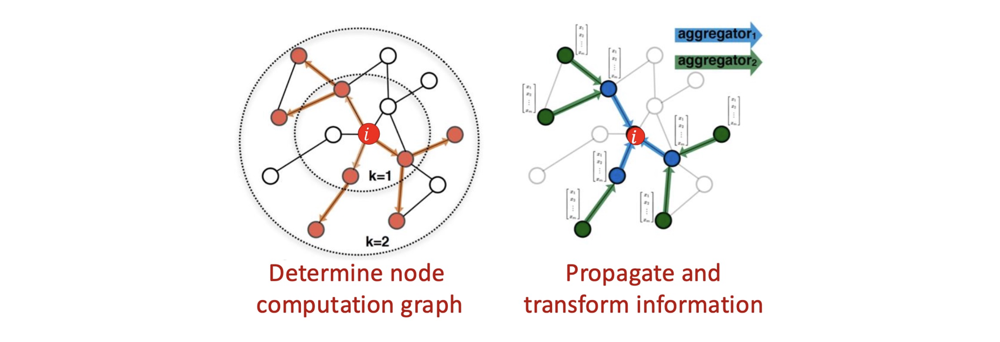
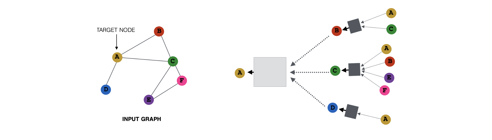
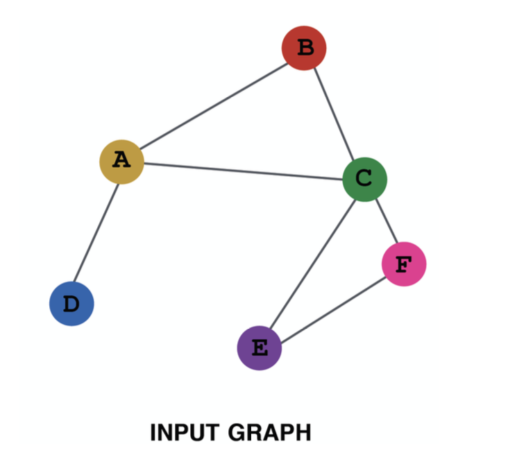
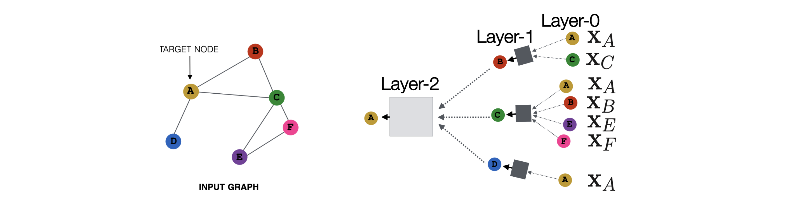
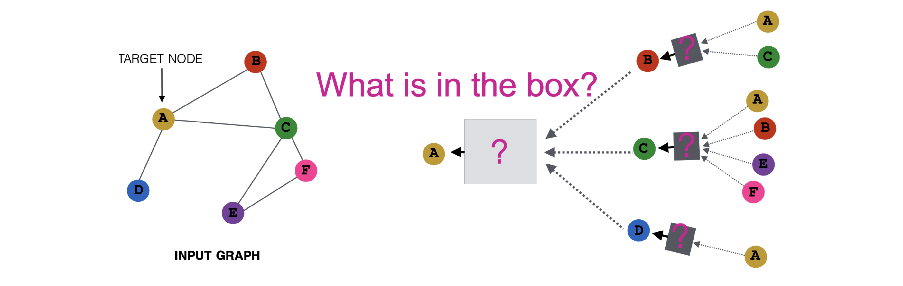

들어가며: GNN 계층의 본질
이전 포스트에서는 기존의 얕은 임베딩(Shallow Embeddings) 방식이 노드 수에 비례하여 파라미터가 증가하고 새로운 노드에 대응하지 못하는 한계가 있음을 확인했습니다. 이를 해결하기 위해 등장한 그래프 신경망(Graph Neural Networks, GNN)은 그래프의 구조와 노드의 특성을 동시에 활용하는 깊은 인코더(Deep Encoder) 모델입니다.
이번 포스트에서는 GNN이 도대체 ‘어떻게’ 그래프 데이터를 신경망 구조에 태우는지, 그 내부의 계층(Layer) 구조와 수학적 원리를 상세히 파헤쳐 보겠습니다.
1. 그래프 데이터 처리의 단순한 접근법과 그 한계 (Naïve Approach)
- 그래프 구조(\(A\))와 노드 특성(\(X\))이 주어졌을 때, 딥러닝을 적용하기 위해 가장 먼저 떠올릴 수 있는 단순한 방법(Naïve approach)은 두 행렬을 하나로 이어 붙여(Concatenation) 다층 퍼셉트론(MLP)에 입력하는 것입니다.

수식으로 표현하면 입력값은 \(A || X\) 가 됩니다. 하지만 이 방식은 그래프 데이터의 본질적 특성을 무시하기 때문에 다음과 같은 치명적인 문제점을 낳습니다.
- 입력 크기의 비유연성 (Different sizes): MLP는 입력 차원이 고정되어 있습니다. 그래프에 노드가 새롭게 추가되거나 삭제되어 인접 행렬 \(A\)의 크기가 변하면, 기존에 학습된 모델을 아예 사용할 수 없습니다.
- 순열에 대한 취약성 (Different node orders): 행렬 \(A\)의 행과 열의 순서는 사람이 임의로 정한 것에 불과합니다. 동일한 위상 구조를 가지더라도 노드의 나열 순서가 바뀌면 MLP는 이를 전혀 다른 입력으로 인식하여 다른 결과를 출력하게 됩니다. (순열 불변성 부재)
2. 연산 그래프와 정보 전파 (Computation Graph)
- 앞선 단순한 MLP 접근법의 한계를 극복하기 위한 GNN의 핵심 아이디어는 “노드의 이웃 구조가 곧 신경망의 연산 그래프(Computation Graph)를 정의한다”는 것입니다.

2.1 입력 그래프와 트리 구조로 펼쳐지는 연산 그래프
- GNN이 동작하는 방식을 구체적으로 이해하기 위해, 다음과 같은 간단한 장난감 그래프(Toy Graph)를 가정해 봅시다.

- 각 노드는 주변 이웃들로부터 정보를 받아 자신의 상태를 업데이트합니다. 타겟 노드 A를 중심으로 정보를 끌어오는 과정을 역추적해 보면, 타겟 노드를 루트(Root)로 하는 트리 형태의 연산 그래프가 만들어집니다.

- 레이어 \(l\)에서의 노드 \(A\)의 은닉 상태(Hidden representation)를 \(h_A^{(l)}\)라고 합시다.
- \(h_A^{(l)}\)는 이전 레이어 \(l-1\)에 있는 자신의 상태 \(h_A^{(l-1)}\)와 이웃 노드들의 상태 \(h_B^{(l-1)}, h_C^{(l-1)}, h_D^{(l-1)}\)를 바탕으로 계산됩니다.
2.2 독립적이고 병렬적인 그래프 정의
- 중요한 점은, 이러한 연산 그래프가 전체를 아우르는 단 하나의 거대한 수식이 아니라, 모든 노드에 대해 각자의 이웃 구조를 바탕으로 병렬적으로(in parallel) 정의된다는 것입니다.

2.3 깊은 그래프 신경망 (Deep GNNs)
- GNN은 이러한 정보 집계 계층을 여러 겹 쌓아 임의의 깊이(Arbitrary depth)를 가질 수 있습니다. 계층(Layer)의 개념을 연산 그래프 위에 매핑해 보면 정보의 흐름이 더욱 명확해집니다.

- Layer-0 (초기 상태): 0번째 계층에서 노드 \(u\)의 임베딩 \(h_u^{(0)}\)는 그래프 구조의 반영 없이 노드 자신이 원래 가지고 있던 특성 벡터 \(x_u\)로 초기화됩니다.
- Layer-k (k-hop 정보의 통합): \(k\)번째 계층의 임베딩은 네트워크 상에서 반경 \(k\)-hop 이내에 있는 모든 이웃들의 정보를 집계한 결과입니다. 계층이 깊어질수록 노드는 더 넓은 전역적(Global) 문맥을 이해하게 됩니다.
3. 이웃 집계 함수 (Aggregation Function)
- 연산 그래프에서 여러 자식 노드(이웃)들의 상태를 모아 부모 노드로 전달해 주는 회색 박스가 바로 이웃 집계 함수(Neighborhood Aggregation)입니다.

- 이 함수는 여러 개의 노드 표현(Representations) 집합을 입력으로 받아, 하나의 새로운 표현 벡터로 매핑합니다. 노드마다 이웃의 개수(차수, Degree)가 천차만별이므로, 집계 함수는 입력의 개수에 유연하게 대응하면서 입력 순서와 무관한(Permutation Invariant) 연산(예: 합계, 평균, 최댓값 풀링 등)으로 구성되어야 합니다.
4. GNN의 기본 계층 수식 (Basic Approach: Layer Update)
- 그렇다면 구체적으로 이 집계 함수와 계층 업데이트는 어떻게 수식으로 정의될까요? 가장 직관적이고 기본적인 형태의 GNN 레이어는 ‘메시지를 변환(Transform)한 뒤 평균(Average)을 내는’ 방식입니다.
4.1 상태 업데이트 수식
- \(L\)개의 계층으로 이루어진 GNN을 가정할 때, 각 노드 \(v\)의 상태 업데이트 수식은 다음과 같습니다.
- 초기화 (Layer 0): \(h_v^{(0)} = x_v\)
- 레이어 업데이트 (Layer \(l \rightarrow l+1\)): \[h_v^{(l+1)} = \sigma \left( \sum_{u \in N(v)} \frac{W^{(l)} h_u^{(l)}}{|N(v)|} + B^{(l)} h_v^{(l)} \right)\]
- 최종 임베딩 반환: \(z_v = h_v^{(L)}\)
4.2 수식의 3단계 해부
위 수식은 딥러닝 관점에서 다음과 같은 3가지 명확한 단계로 분해됩니다.
Step 1. 변환 (Transform)
- \(W^{(l)} h_u^{(l)}\) : 이웃 노드 \(u\)가 보내는 메시지를 가중치 행렬 \(W^{(l)}\)에 곱하여 의미 있는 잠재 공간으로 투영합니다.
- \(B^{(l)} h_v^{(l)}\) : 다음 계층의 업데이트를 위해, 자기 자신의 이전 상태 \(h_v^{(l)}\) 역시 별도의 가중치 \(B^{(l)}\)에 곱해 변환합니다.
Step 2. 집계 (Aggregate)
- \(\sum_{u \in N(v)} \frac{(\cdot)}{|N(v)|}\) : 이웃 \(N(v)\)들로부터 온 메시지들을 모두 합친 뒤 이웃의 개수 \(|N(v)|\)로 나누어 평균(Average)을 취합니다. 허브(Hub) 노드처럼 연결이 비정상적으로 많은 노드의 값이 폭발하는 것을 방지하는 정규화 과정입니다.
Step 3. 비선형 활성화 (Nonlinearity)
- \(\sigma(\cdot)\) : 계산된 선형 결합 결과에 ReLU 연산과 같은 비선형 함수를 적용합니다. 이를 통해 다층 네트워크가 복잡한 표현력을 획득하게 됩니다.
5. 행렬 연산 기반의 수식화 (Matrix Formulation)
- 위 수식은 특정 노드 \(v\) 하나에 초점을 맞춘 것입니다. 하지만 실제 구현 시 수많은 노드를 순회 반복(For-loop)하는 것은 매우 비효율적입니다. 따라서 전체 그래프에 대한 연산을 한 번의 텐서 연산으로 처리하는 행렬 공식(Matrix Formulation)이 필수적입니다.
5.1 전체 노드 업데이트 행렬 수식
- 전체 노드의 \(l\)번째 은닉 상태를 행으로 차곡차곡 쌓은 행렬을 \(H^{(l)} \in \mathbb{R}^{|V| \times d_l}\) 이라고 합시다. 기본 GNN 레이어는 다음과 같이 우아한 행렬식으로 표현됩니다.
\[ H^{(l+1)} = \sigma \left( D^{-1} A H^{(l)} W^{(l)} + H^{(l)} B^{(l)} \right) \]
- \(A \in \mathbb{R}^{|V| \times |V|}\) : 인접 행렬
- \(D \in \mathbb{R}^{|V| \times |V|}\) : 대각선 성분에 각 노드의 차수(이웃 수)를 기록한 대각 행렬 (\(d_{ii} = \sum_k a_{ik}\))
- \(W^{(l)}, B^{(l)} \in \mathbb{R}^{d_l \times d_{l+1}}\) : 해당 레이어에서 학습되는 가중치 행렬
5.2 행렬 곱의 의미 해석
- \(A H^{(l)}\) : 인접 행렬과 노드 상태를 곱하면, 자연스럽게 각 노드 행에 연결된 이웃들의 상태 벡터 합산(Sum) 결과가 맺히게 됩니다.
- \(D^{-1} (A H^{(l)})\) : 역행렬 \(D^{-1}\)을 곱하는 것은 각 행을 해당 노드의 차수로 나누어주는 것과 완벽히 일치합니다. 즉, 단순 합산을 평균(Average)으로 정규화하는 수학적 트릭입니다.
5.3 기존 MLP 수식과의 비교
- 일반적인 MLP의 업데이트 수식은 \(H^{(l+1)} = \sigma \left( H^{(l)} W^{(l)} \right)\) 입니다.
- 이를 GNN 식과 비교하기 위해 자기 자신 변환 행렬 \(B\)와 이웃 변환 행렬 \(W\)를 단순화하여 하나로 묶어본다면, GNN은 다음과 같이 요약할 수 있습니다.
\[H^{(l+1)} \approx \sigma \left( \hat{A} H^{(l)} W^{(l)} \right) \quad (\text{단, } \hat{A} = D^{-1}A)\]
- 결과적으로 GNN은 기존 MLP 연산(특성 변환 \(H W\)) 앞에 정규화된 인접 행렬 \(\hat{A}\)를 곱해주는 구조적 혼합(Structural mixing) 과정을 하나 더 얹은 것으로 볼 수 있습니다. 즉, GNN은 완전히 새로운 이질적인 구조가 아니라 딥러닝 패러다임을 비유클리드 그래프 공간으로 자연스럽게 확장(Natural extension)한 것입니다.
6. 파라미터 개수 비교 및 학습 (Parameters & Training)
6.1 막대한 파라미터 절감 효과
DeepWalk와 같은 얕은 인코더(Shallow Encoder)는 각 노드마다 별개의 임베딩 룩업 벡터를 생성하므로 파라미터 수가 노드 수에 비례하는 \(\mathcal{O}(|V|d)\) 이었습니다. 그래프가 커지면 학습이 불가능했습니다.
하지만 GNN의 파라미터 행렬 \(W\)와 \(B\)는 노드의 식별자나 개수(\(|V|\))에 의존하지 않고 오직 특성 벡터의 차원(\(d\))에만 의존합니다. 은닉층 차원이 \(d\), 초기 입력 차원이 \(d_{in}\)일 때 \(L\)층 GNN의 파라미터 수는 대략 다음과 같습니다.
\[\text{Number of parameters: } \mathcal{O}(L d^2 + d \cdot d_{in})\]
- 노드들이 가중치를 완벽하게 공유(Weight sharing)하므로 거대한 네트워크도 학습 가능하며, 학습 시 보지 못했던 새로운 서브그래프나 노드가 추가되어도 즉시 임베딩을 계산할 수 있는 귀납적 추론(Inductive learning)이 가능합니다.
6.2 GNN의 손실 함수와 학습
- 비지도 학습 (Unsupervised Learning)
- 레이블 없이 오직 그래프 구조만으로 임베딩을 학습할 때 사용합니다. 임베딩 벡터 간 유사도를 이용해 원본 그래프의 주변 문맥을 잘 복원하도록 모델 파라미터 \(\theta\)를 최적화합니다. \[\theta^* = \arg\min_\theta \sum_v - \log P(N(v) | z_v)\]
- 지도 학습 (Supervised Learning)
- 노드 분류, 링크 예측 등의 명확한 태스크 라벨 \(y\)가 주어졌을 때는, 최종 출력된 임베딩 기반의 예측값 \(f(z_v)\)과 실제 라벨 간의 오차(Cross-Entropy 등) \(\mathcal{L}\)을 최소화하는 방향으로 엔드투엔드(End-to-End) 학습을 진행합니다. \[\theta^* = \arg\min_\theta \sum_v \mathcal{L}(y, f(z_v))\]